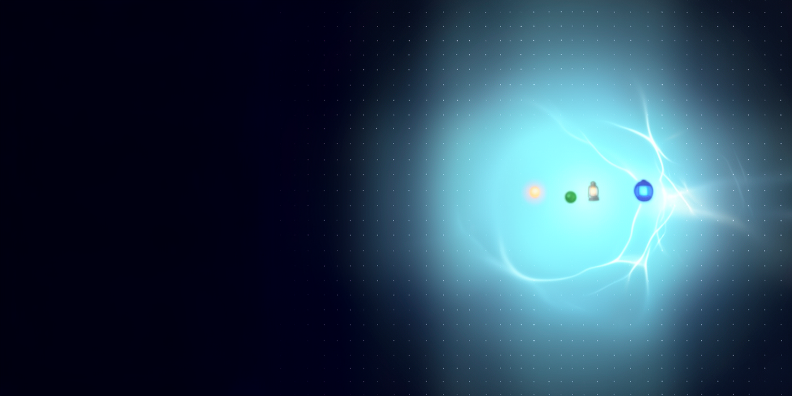

Pincha una imagen para verla a tamaño real. Marca sí/no y pega el veredicto en el chat.
Wide abstract banner on a deep midnight navy background. On the right half, a soft radial glow of clear sky-blue light blooms upward, like daylight seen through calm sea water and polished glass, with gentle rippling caustic patterns. A faint grid of tiny evenly spaced dots covers the whole background and fades softly into the darkness. The left half of the frame is a calm, smooth, dark navy surface, nearly empty and softly out of focus. Inside the sky-blue glow float three small soft points of light, one warm orange, one deep forest green and one royal blue, like distant lanterns. Style: minimal elegant digital art, smooth gradients, soft volumetric light, crisp and clean. Colours: deep midnight navy, sky blue, cyan and white highlights. Mood: calm, honest, quietly ambitious. The image is completely textless.
